Visual Content System Demonstration
Visual Content System Demonstration
Testing all visual components with real surgical images
1. Image Gallery Test
3D Reconstructions Gallery
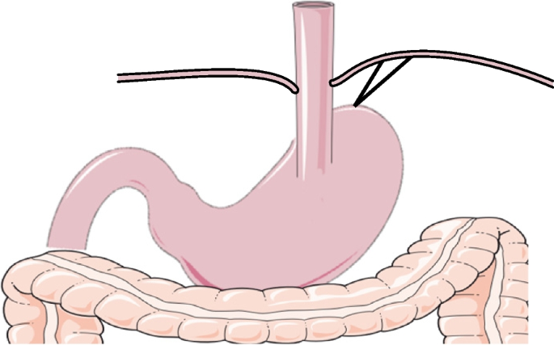
Anterior perspective showing gastric anatomy
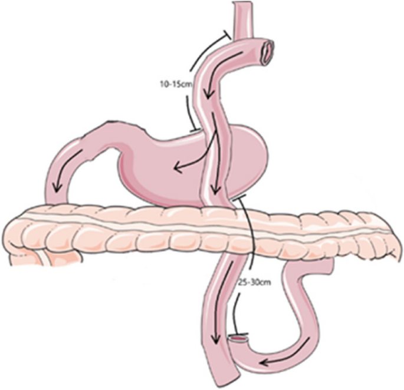
Lateral perspective
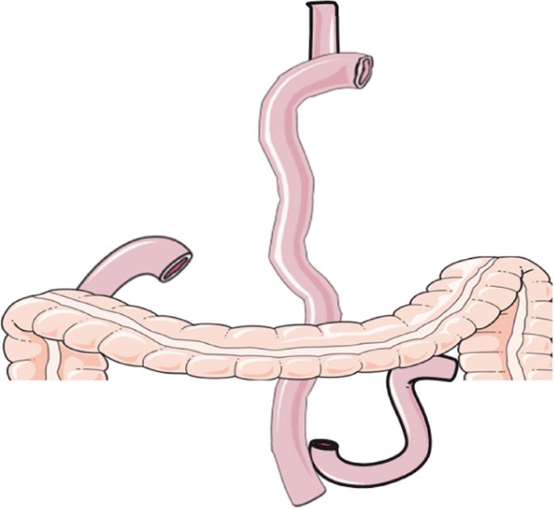
Posterior perspective
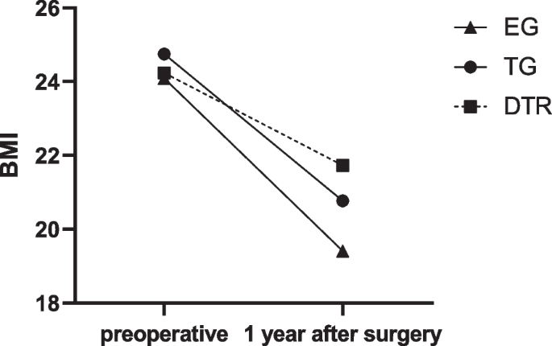
Detailed anatomical view
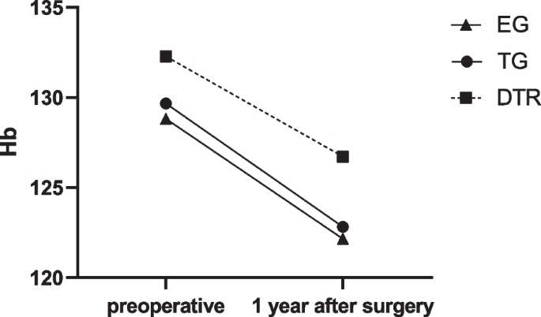
Vascular anatomy highlighted
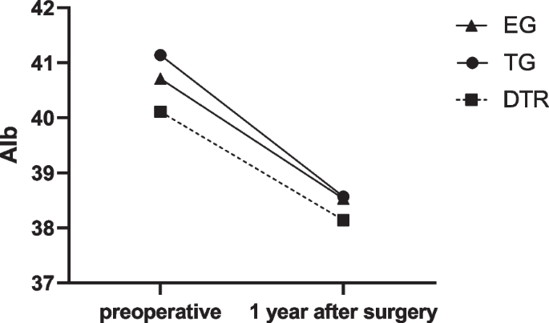
Lymphatic system visualization
Collection of 3D reconstructions showing various anatomical perspectives
2. Multi-Panel Figure Test
A
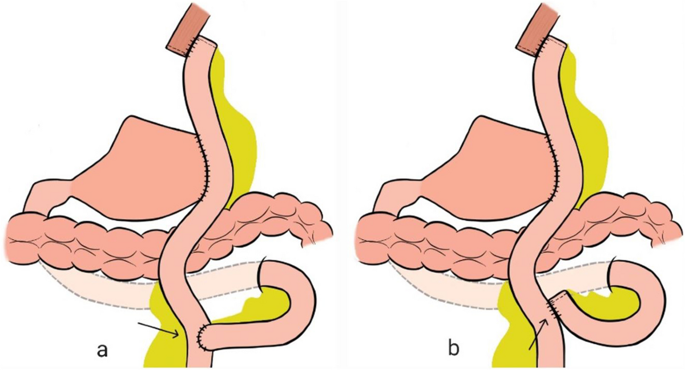
High-resolution anatomical reconstruction
B
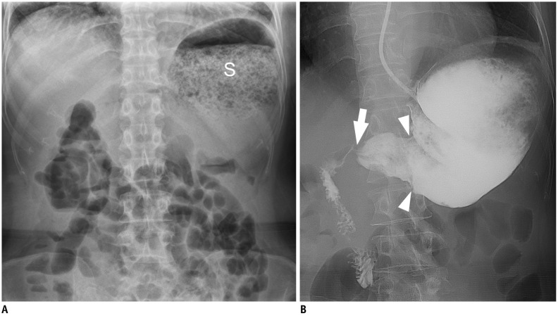
Intraoperative laparoscopic view
C
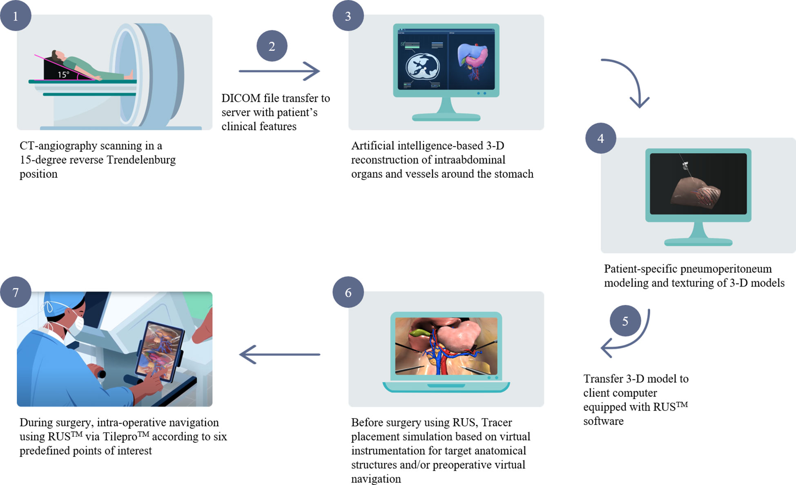
Detailed lymph node station map
D
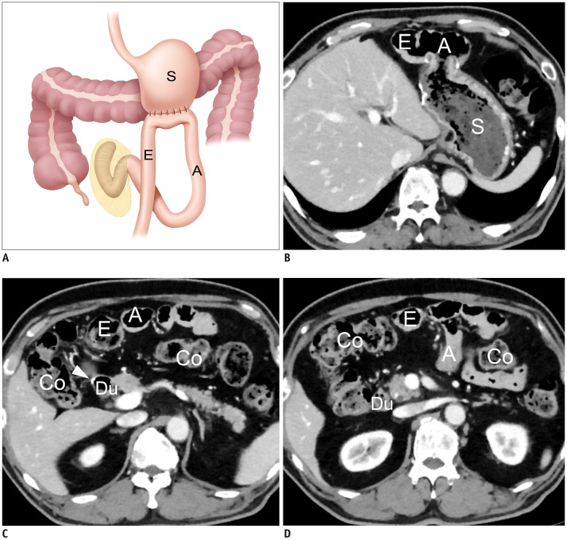
Key surgical technique demonstration
3. Surgical Photos Panel Test
Figure 2: Intraoperative Findings - Laparoscopic Gastrectomy
Note: All patient identifiers have been removed. Informed consent obtained.
Laparoscopic view of gastric anatomy
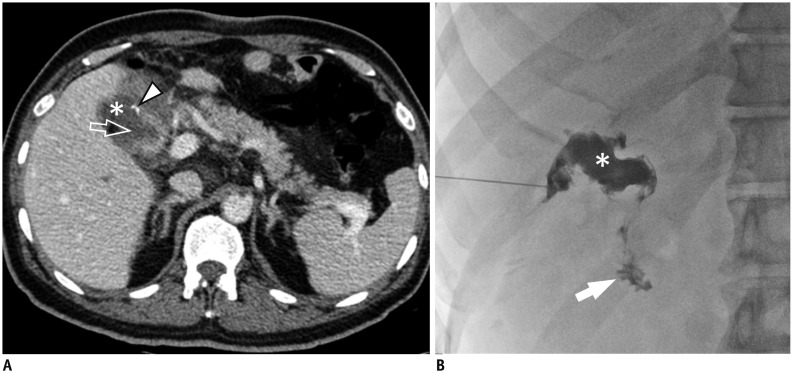
Critical vessel identification
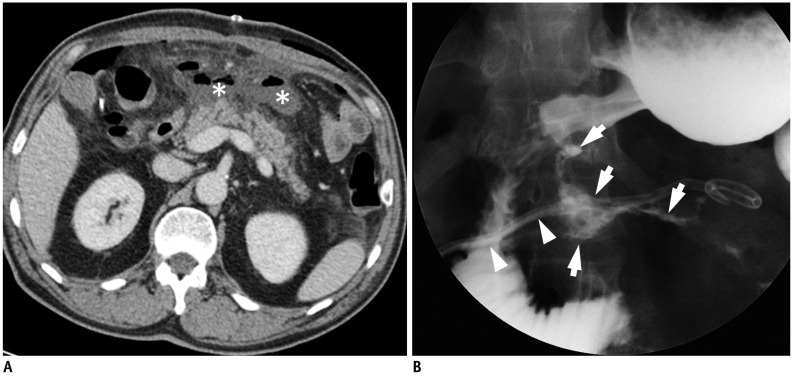
D2 lymphadenectomy in progress
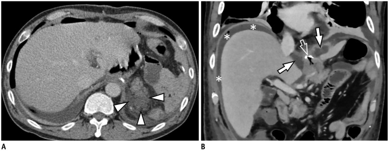
Resected specimen examination
4. Step-by-Step Procedure Test
Figure 3: Key Steps in Laparoscopic Technique
Step 1
Port placement and patient positioning
Step 2
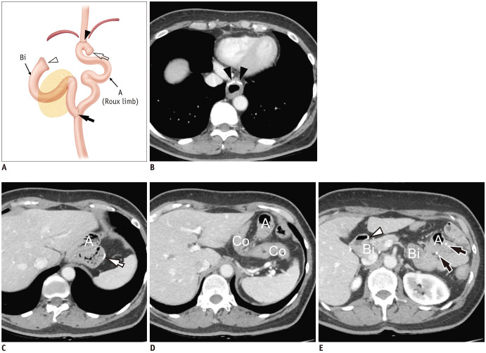
Greater curvature mobilization and omental dissection
Step 3
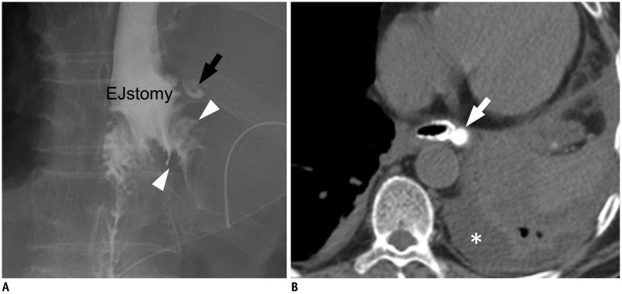
Systematic lymph node dissection
Step 4
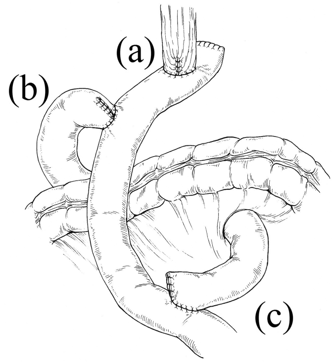
Gastrojejunostomy anastomosis creation
5. Comparison Slider Test
6. Annotated Image Test
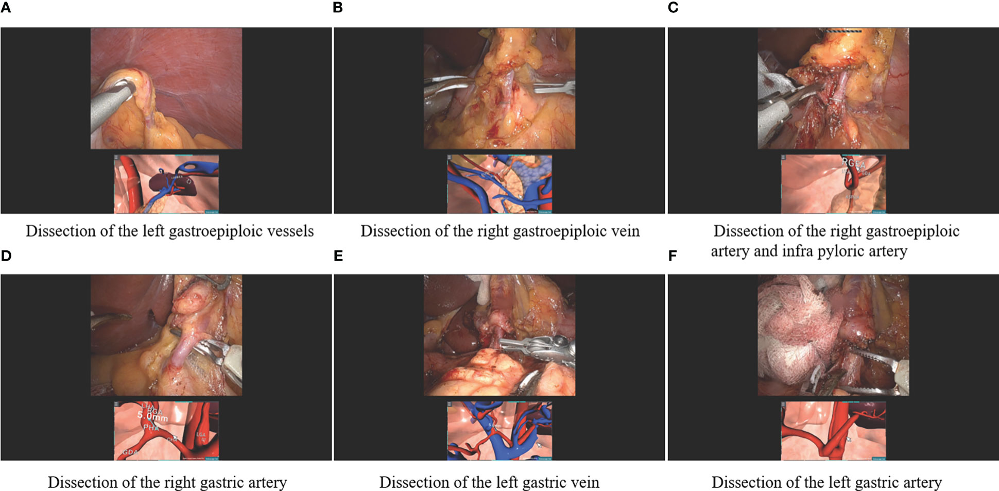
7. Horizontal Procedure Steps Test
Figure 6: Sequential Surgical Phases
Step 1
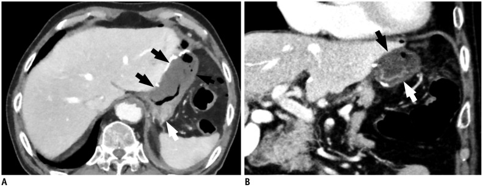
Initial exploration
Step 2
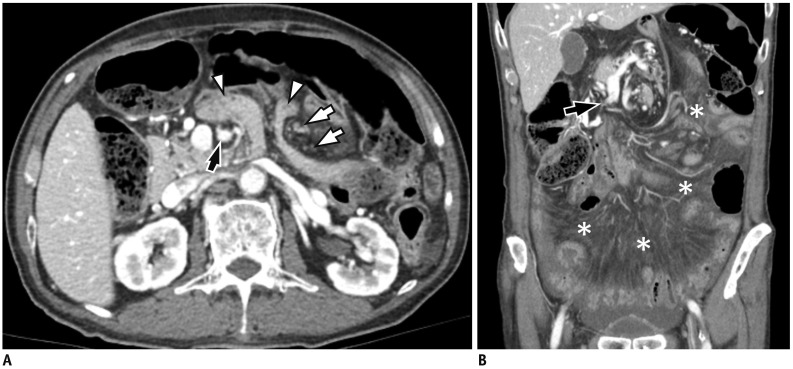
Active dissection
Step 3
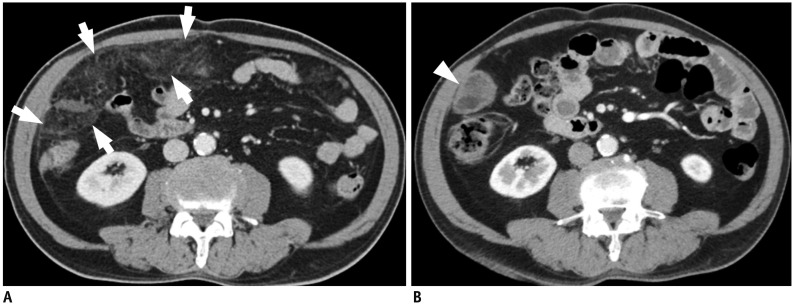
Reconstruction planning
8. Large Anatomical Diagram Gallery
D1 and D2 lymphadenectomy stations
Celiac axis and major branches
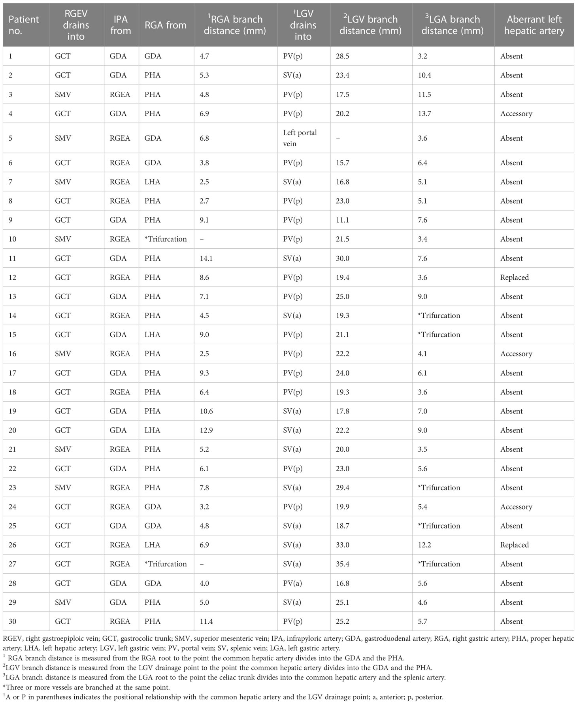
Detailed regional surgical anatomy
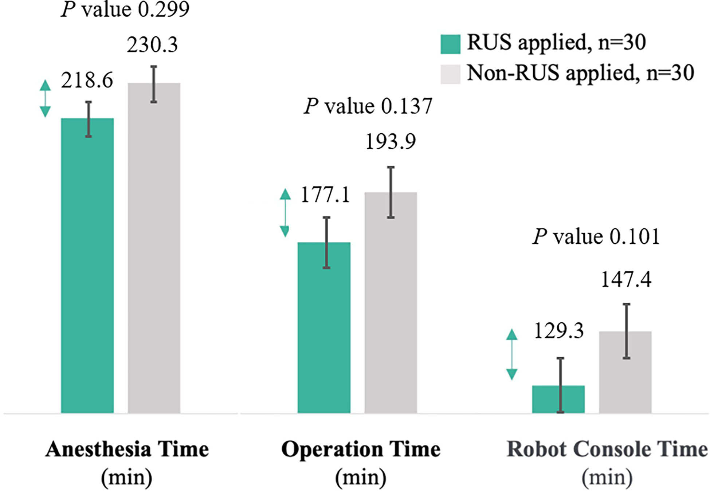
Optimal surgical approach visualization
Detailed anatomical diagrams for surgical planning
9. Three-Column Gallery Test
Comprehensive collection of surgical photographs
10. Grid Layout Procedure Test
Figure 7: Comprehensive Surgical Protocol
Step 1
Preoperative planning with 3D model
Step 2
Patient setup and port placement
Step 3
Initial exploration
Step 4
Mobilization phase
Step 5
Critical dissection
Step 6
Final reconstruction
Conclusion
This test manuscript demonstrates all visual component types: ✅ Image galleries (3-column, 2-column) ✅ Multi-panel figures (2×2 grid) ✅ Surgical photo panels ✅ Step-by-step procedures (vertical, horizontal, grid) ✅ Comparison sliders ✅ Annotated images
All components use real surgical images from the reference materials collection.